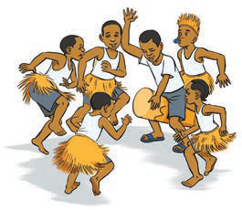

Vyakula
Jamii za Kitanzania zilikuwa na vyakula mbalimbali vya asili.
Kazi ya kufanya namba 11

Waulize wazazi au walezi na andika kuhusu vyakula vya asili vya kabila lako.
Jamii zina asili ya vyakula vinavyofanana, ingawa kuna tofauti ya mapishi.
Kwa mfano, jamii nyingi zilikuwa na chakula cha ndizi, ingawa mapishi ya ndizi yalitofautiana kati ya jamii na jamii.
Mapishi ya ndizi ya asili hufanyika ama kwa kuchanganywa na nyama, maharagwe, samaki, njugu mawe, choroko au mbogamboga.
Pia, ndizi huchomwa au huchanganywa na maharagwe, supu au maziwa na kukorogwa